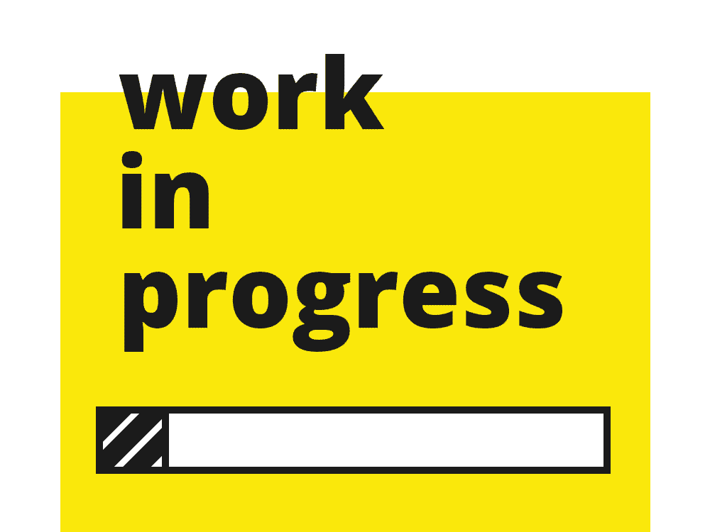

SensUs 2021
Sensing Barcelona
Sensing Barcelona is a team formed by Biomedical Engineering students and PhD students from the UB and the UPC participating in SensUs 2021. We are willing to apply the knowledge acquired during our studies, enhance our scientific skills, and learn the whole process of developing a product. The COVID-19 times have witnessed the necessity of borderless support to develop a whole arsenal to fight the virus. We believe in this unique opportunity to share knowledge and experiences with our competitors no matter culture, nationality, religion, or sexuality, only the main objective: improving health.
Our team is in a very early stage of the development and design of this product, as we are still choosing which is the most interesting method to carry on.
